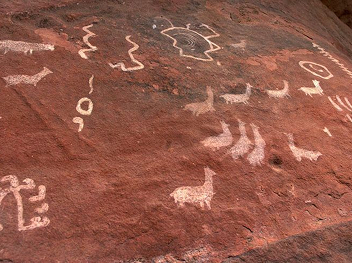
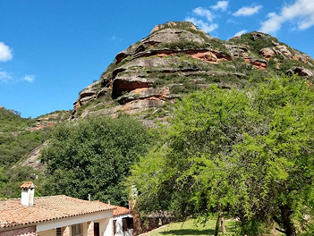
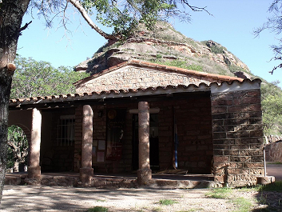
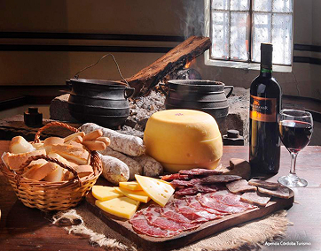
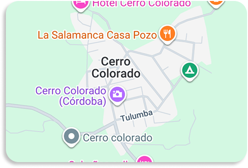

Planificá tu visita
Actividades, accesos y servicios para vivir Cerro Colorado de manera responsable.
¿Qué podés hacer?
Cerro Colorado ofrece diferentes propuestas para conocer su patrimonio cultural y natural.
Visitá el Arte

Senderismo y
Naturaleza

Museo Atahualpa
Yupanqui

Productos
Autóctonos
Antes de visitar
Algunos cerros están cerrados al público, mientras que otros abren con acceso administrado por privados y pueden requerir una remuneración económica. Ayudanos a cuidar las pictografías y el patrimonio, respetando las indicaciones y las señalizaciones.
Cómo llegar
Desde la Ruta Nacional 9 hasta la localidad de Santa Elena, luego por la Ruta 21 hacia el oeste.
La localidad cuenta con una pequeña terminal que recibe turistas de distintos puntos del país.
Ver ubicación en el mapa
En auto
Desde Córdoba por RP 28.
En transporte
Consultá opciones desde Córdoba y localidades cercanas.
Ubicación
Intersección de Río Seco, Tulumba y Sobremonte.
Dónde alojarse
En la zona podés encontrar diferentes opciones de alojamiento.